UC3M ❤, University of Sussex, Amsterdam, Qualcomm, ...
Lead data scientist @StyleSage
javier.ordonez@stylesage.co
@fjordonz
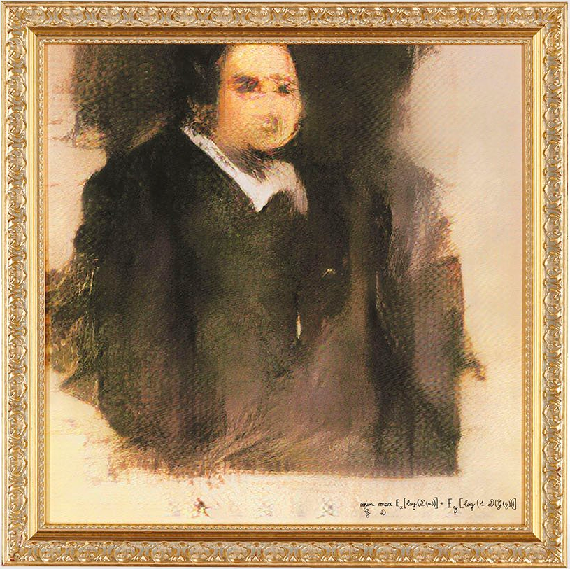
Portrait of Edmond De Belamy
Ink on canvas. 70 cm × 70 cm
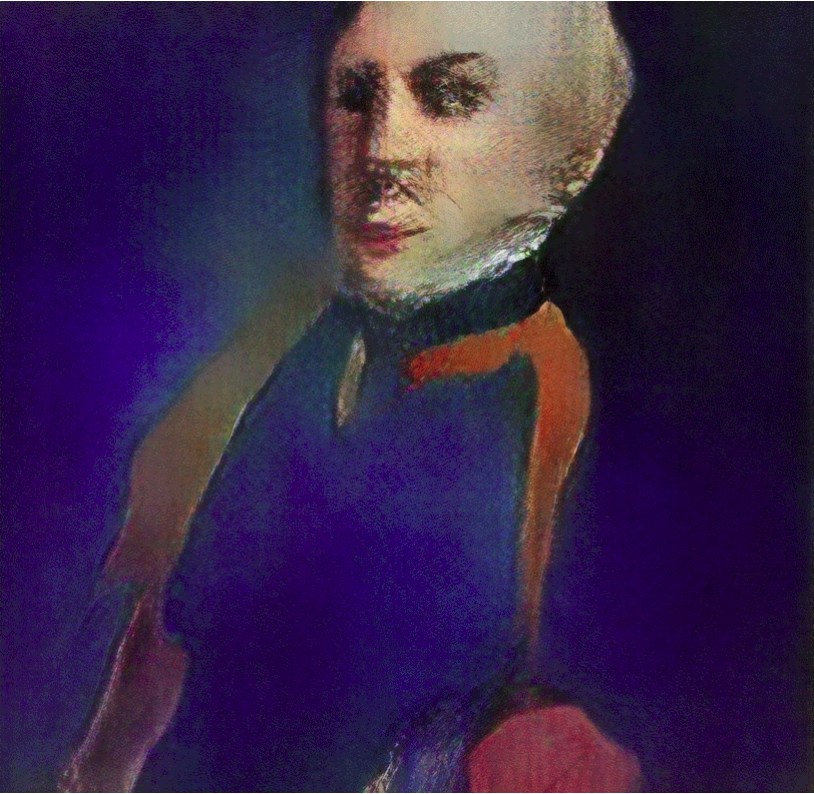
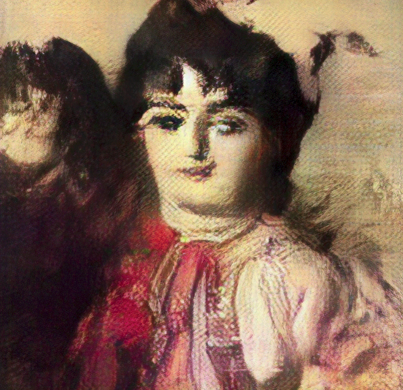
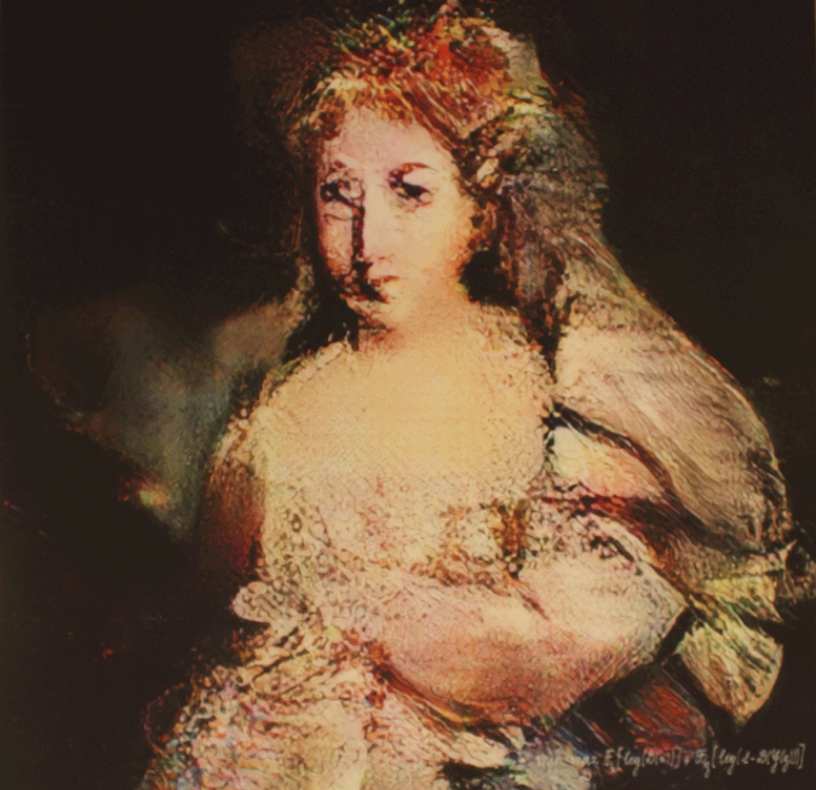
Portrait of Edmond De Belamy
Ink on canvas. 70 cm × 70 cm
“Portrait painted in the "Old Master" 18th-century style of artists
like Rembrandt van Rijn. He looks unnervingly like one of Glenn Brown’s art-historical
appropriations…”
$432,500
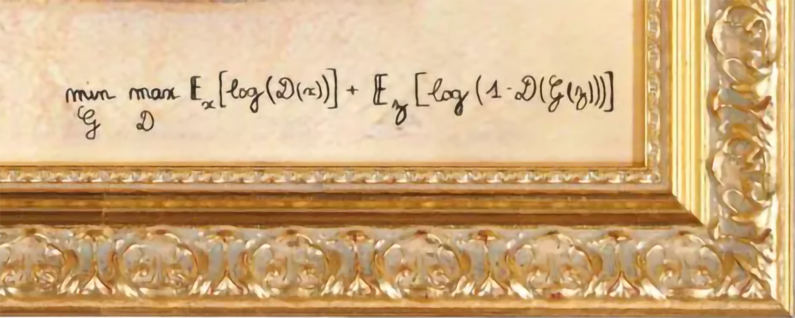
Creativity the ability to produce ideas or artefacts that are new, surprising, and valuable.
1. Configurarlo (╯°□°)╯︵ ┻━┻
1. 1 Conseguir ejecutar comandos por consola
1. 2 Python, git y tensorflow instalado
2. git clone https://github.com/cysmith/neural-style-tf.git
3. Copiar imágenes a transformar en la carpeta './image_input/'
4. Copiar las imágenes con los estilos en la carpeta './styles'
5. bash stylize_image.sh <ruta_a_image_input> <ruta_a_styles>
6. Ver si funciona ¯\_(ツ)_/¯
7. Maldecir e ir a https://deepart.io/
1. Configurarlo (╯°□°)╯︵ ┻━┻
1. 1 Conseguir ejecutar comandos por consola
1. 2 Torch, git, Lua, CUDA, CuDNN instalado
2. Buscar en Google como instalar cuDNN (┛◉Д◉) ┛彡┻━┻
3. https://github.com/robbiebarrat/art-DCGAN.git
4. Copiar las imágenes con los en la carpeta './images'
5. DATA_ROOT=myimages dataset=folder ndf=50 ngf=150 th main.lua
ndf = número de capas en el discriminador
ngf = número de capas en el generador
6. Ver lo difícil que es que converja ┻━┻︵└(՞▃՞ └)
7. DATA_ROOT=myimages dataset=folder
netD=discriminator.t7
netG=generator.t7
th main.lua
8. net=your_generator_net.t7 th generate.lua
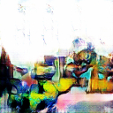
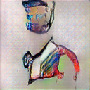
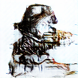
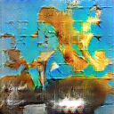
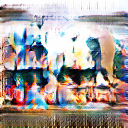
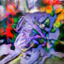
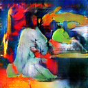
Y para terminar
The creative act does not reside in the output generated by the machine, but in its initial human programming.
The art generated by AI is not creative, because it is unintentional.
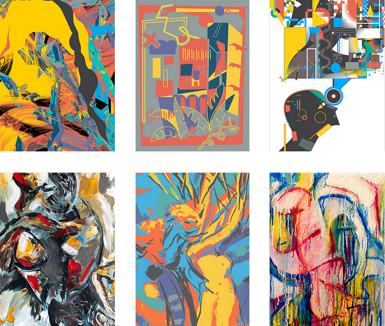
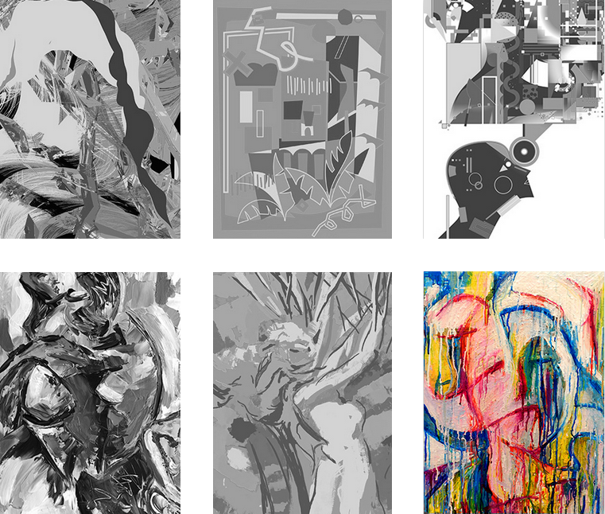
Art, Creativity, and the Potential of Artificial Intelligence